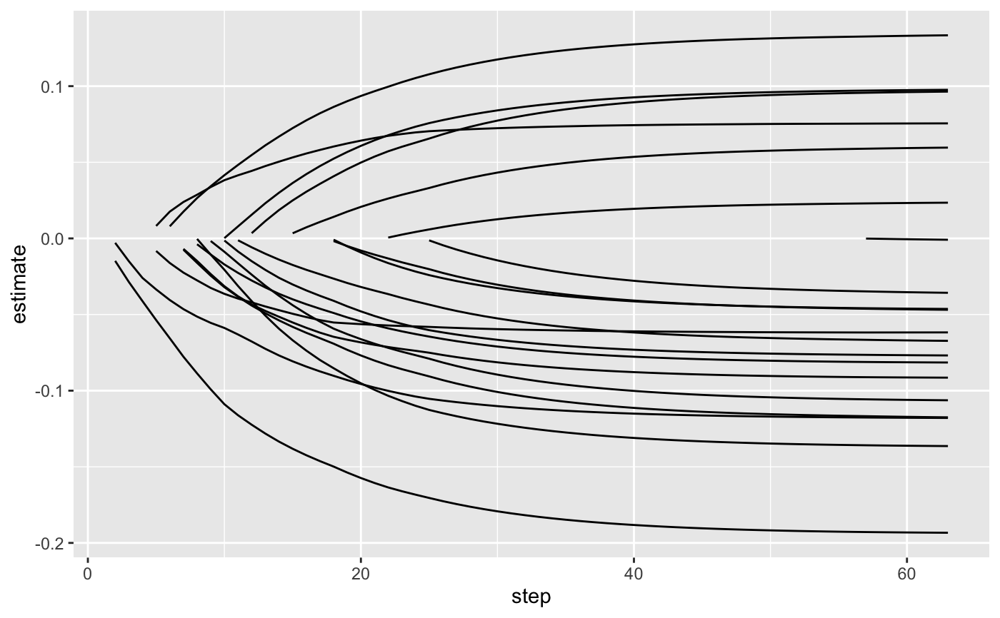
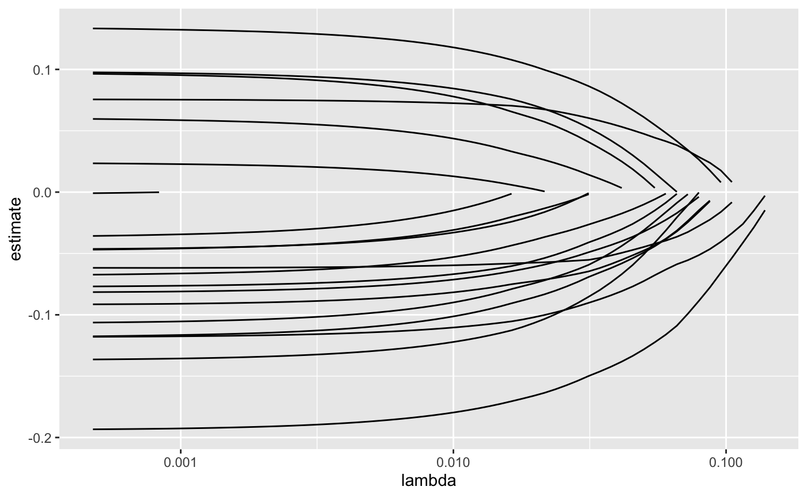
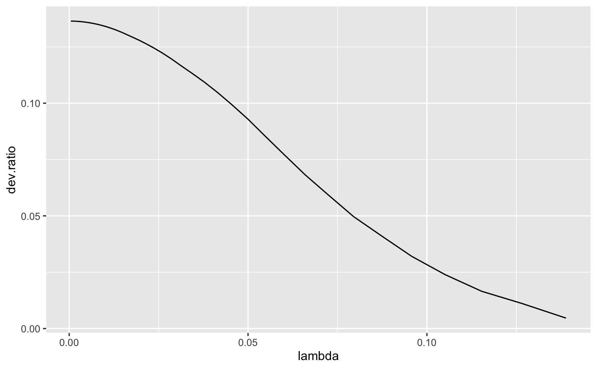

Tidy summarizes information about the components of a model. A model component might be a single term in a regression, a single hypothesis, a cluster, or a class. Exactly what tidy considers to be a model component varies cross models but is usually self-evident. If a model has several distinct types of components, you will need to specify which components to return.
# S3 method for glmnet tidy(x, return_zeros = FALSE, ...)
| x | A |
|---|---|
| return_zeros | Logical indicating whether coefficients with value zero
zero should be included in the results. Defaults to |
| ... | Additional arguments. Not used. Needed to match generic
signature only. Cautionary note: Misspelled arguments will be
absorbed in |
Note that while this representation of GLMs is much easier to plot and combine than the default structure, it is also much more memory-intensive. Do not use for large, sparse matrices.
No augment method is yet provided even though the model produces
predictions, because the input data is not tidy (it is a matrix that
may be very wide) and therefore combining predictions with it is not
logical. Furthermore, predictions make sense only with a specific
choice of lambda.
Other glmnet tidiers:
glance.cv.glmnet(),
glance.glmnet(),
tidy.cv.glmnet()
A tibble::tibble() with columns:
fraction of null deviance explained at each value of lambda
The estimated value of the regression term.
Value of penalty parameter lambda.
which step of lambda choices was used
The name of the regression term.
library(glmnet) set.seed(2014) x <- matrix(rnorm(100*20),100,20) y <- rnorm(100) fit1 <- glmnet(x,y) tidy(fit1)#> # A tibble: 1,086 x 5 #> term step estimate lambda dev.ratio #> <chr> <dbl> <dbl> <dbl> <dbl> #> 1 (Intercept) 1 -0.207 0.152 0 #> 2 (Intercept) 2 -0.208 0.139 0.00464 #> 3 V16 2 -0.00292 0.139 0.00464 #> 4 V17 2 -0.0148 0.139 0.00464 #> 5 (Intercept) 3 -0.209 0.127 0.0111 #> 6 V16 3 -0.0150 0.127 0.0111 #> 7 V17 3 -0.0286 0.127 0.0111 #> 8 (Intercept) 4 -0.210 0.115 0.0165 #> 9 V16 4 -0.0260 0.115 0.0165 #> 10 V17 4 -0.0412 0.115 0.0165 #> # … with 1,076 more rowsglance(fit1)#> # A tibble: 1 x 3 #> nulldev npasses nobs #> <dbl> <int> <int> #> 1 104. 255 100library(dplyr) library(ggplot2) tidied <- tidy(fit1) %>% filter(term != "(Intercept)") ggplot(tidied, aes(step, estimate, group = term)) + geom_line()# works for other types of regressions as well, such as logistic g2 <- sample(1:2, 100, replace=TRUE) fit2 <- glmnet(x, g2, family="binomial") tidy(fit2)#> # A tibble: 947 x 5 #> term step estimate lambda dev.ratio #> <chr> <dbl> <dbl> <dbl> <dbl> #> 1 (Intercept) 1 0.282 0.0906 -1.46e-15 #> 2 (Intercept) 2 0.281 0.0826 6.28e- 3 #> 3 V10 2 0.0138 0.0826 6.28e- 3 #> 4 V13 2 -0.0353 0.0826 6.28e- 3 #> 5 (Intercept) 3 0.279 0.0753 1.55e- 2 #> 6 V10 3 0.0538 0.0753 1.55e- 2 #> 7 V13 3 -0.0742 0.0753 1.55e- 2 #> 8 (Intercept) 4 0.277 0.0686 2.48e- 2 #> 9 V6 4 0.00225 0.0686 2.48e- 2 #> 10 V10 4 0.0907 0.0686 2.48e- 2 #> # … with 937 more rows